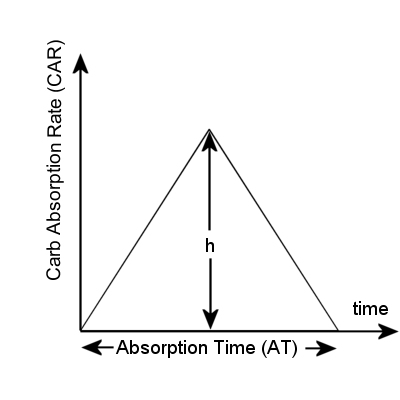

Modeling the absorption of Carbs from the gut⌁
There are many complicated and more or less precise published models of carb absorption, but for the purpose of this simulation, a simple bilinear model like the one found in the book Think Like a Pancreas by Gary Scheiner, and used in Perceptus' Glucodyn simulator will do for now.

So if the total absorption time (AT) is 4 hours, the absorption rate increases linearly until it reaches its peak, then decreases linearly to the end. The surface area of the triangle represents the amount of ingested carbs (the "Dose"). The peak absorption rate is "h". This can be represented with the equivalent following equations:
Let's get rid of the "h", and describe the Carbs Absorption Rate (CAR) as a function of time :
- In the increasing phase of absorption :
- And in the decreasing phase:
Mixed meals and Snacks
To make the absorption of carbs more realistic, the first 40 g of each meal will always be fast absorbing.
For bigger meals, the excess carbs over 40g are divided in fast and slow absorbing parts. The ratio of fast absorbing carbs is randomly computed to be 10-40 % of the carb excess. So for a meal declared as 100g, the first 40 are fast carbs. The remaining 60g will be divided randomly in slow and fast parts. You'll find out sooner or later.
In the current version of the simulator, fast carbs will be absorbed according to the bilinear model mentioned above, over a period of time of one hour. The remaining (slow) carbs are absorbed in a similar bilinear fashion, but over a period of 4 hours. This can be set in the interactive setup script during installation.